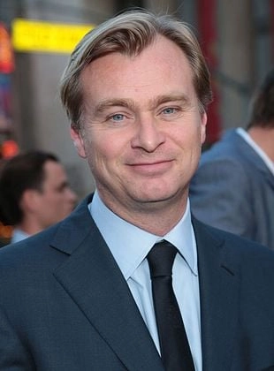
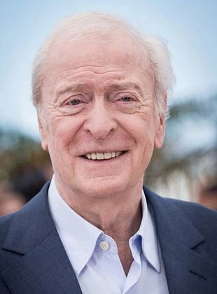
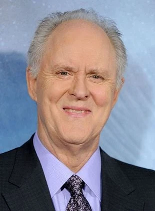
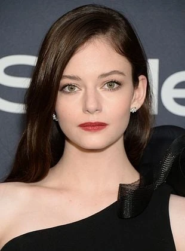

Christopher Nolan
Actividades: Director, Guionista, Productor
Nacionalidad: Británico
Nacimiento: 30 de julio de 1970 (Londres, - Inglaterra)
Edad: 54 años

Actividades: Director, Guionista, Productor
Nacionalidad: Británico
Nacimiento: 30 de julio de 1970 (Londres, - Inglaterra)
Edad: 54 años
Actividades: Actor, Productor delegado, Productor
Personaje: Joseph Cooper
Nacionalidad: Americano
Nacimiento: 4 de noviembre de 1969 (Uvalde, Texas - EE.UU)
Edad: 55 años
Actividades: Actriz, Productora
Personaje: Amelia Brand
Nacionalidad: Americana
Nacimiento: 12 de noviembre de 1982 (Nueva York - EE-UU)
Edad: 42 años

Actividades: Actor, Productor, Intérprete (Banda sonora)
Personaje: John Brand
Nacionalidad: Británico
Nacimiento: 14 de marzo de 1933 (Londres, Inglaterra - Reino Unido)
Edad: 92 años

Actividades: Actor, Productor ejecutivo
Personaje: Donald
Nacionalidad: Americano
Nacimiento: 19 de octubre de 1945
Edad: 79 años
Actividades: Actriz, Productora, Productor ejecutivo
Personaje: Murph Cooper
Nacionalidad: Americana
Nacimiento: 24 de marzo de 1977
Edad: 48 años
Actividades: Actor, Guionista, Productor
Personaje: Tom Cooper
Nacionalidad: Americano
Nacimiento: 12 de agosto de 1975 (Massachusetts - EE-UU)
Edad: 49 años

Actividades: Actriz
Personaje: Murph Cooper (Joven)
Nacionalidad: Americana
Nacimiento: 10 de noviembre de 2000
Edad: 24 años
Actividades: Actor
Personaje: Doyle
Nacionalidad: Americano
Nacimiento: 4 de septiembre de 1978
Edad: 46 años
Actividades: Actor
Personaje: Tars (Voz)
Nacionalidad: Americano
Nacimiento: 11 de abril de 1950
Edad: 46 años